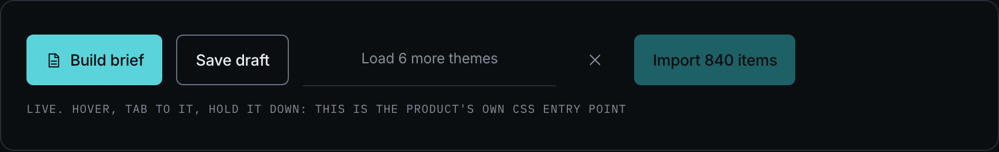
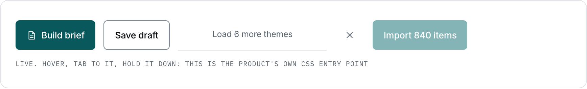
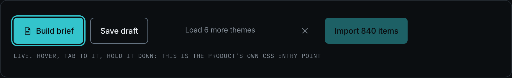
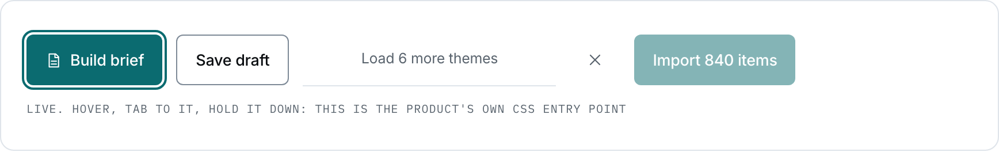

Live. Hover, tab to it, hold it down: this is the product's own CSS entry point
Variants and states
Emphasis says how much this action weighs in its zone; size says how dense the place is; state says what is happening to it now. Three emphases, two sizes, five states. Every cell is the product's own rule: the states are drawn from the CSS, not painted.
| Emphasis | State | Medium | Large, 0.0 only |
|---|---|---|---|
Fill.btn | Rest | ||
| Hover | |||
| Pressed | |||
| Focus | |||
| Disabled | |||
Outline.btn--ghost | Rest | ||
| Hover | |||
| Pressed | |||
| Focus | |||
| Disabled | |||
Bare.btn--bare | Rest | No large form, and that is a rule: a bare control has no box, so a size step would be a font size floating in a list with nothing to anchor it. | |
| Hover | |||
| Pressed | |||
| Focus | |||
| Disabled |
Other forms
.btn--icon with the label in .vh. For a control that repeats down a list. 13 in the product, medium only: the target is already the 44px floor.svg.ic before the label. A leading icon promises "acts here". 12 in the product..u-full from base.css. Not a variant..u-apart and the outline, never the place beside the confirm. 6.3 Share link.Properties
| Property | Type | Values | Default |
|---|---|---|---|
| Emphasis | variant | fill .btn · outline .btn--ghost · bare .btn--bare | none: one class is required |
| Size | variant | medium, no class · large .btn--lg, 0.0 only | medium |
| Leading icon | slot | svg.ic before the label, 15px | empty |
| Icon only | own class | .btn--icon, label in .vh | no |
| Width | layout, not a property | .u-full from base.css | auto |
| State | variant | rest · hover · pressed · focus-visible · disabled | rest |
How to use it
When
Where the person acts. One filled button per screen, and it is the next move: the fourth design principle, one decision at a time, written as usage rule R1. Every other real action takes the outline.
The label is a verb and its object from voice/docs/microcopy.md: "Build brief", "Import 840
items". A count in a label tells the person what they are about to commit to.
When not
- To go somewhere: take
.link. A button acts, a link travels. - For "Clear filters": take
.link--action, a text action with a control's target. - To make it wide: take
.u-full, never a new variant. - For a bare "OK", an exclamation mark or "just": the voice rules forbid all three.
Limits
Usage rules that name this component. Each is written once, on Architecture, the usage rules, with where it was taken from; this is the short copy.
- R1. At most one filled
.btnvisible on a screen; every other real action takes.btn--ghost. An action at rest and an action on selection are exclusive in CSS: a ticked theme card shows.selbarand hides.head-action. On 0.0 Home the count is per section.
.clear was a fourth emphasis until the census counted it. It is .link--action now.Where it stands
Every screen of the product: 67 filled, 33 outlined, 4 bare, 13 icon-only, 11 large across the 38 wireframes. The ones already in colour:
Anatomy
Three zones, and two of them are optional. The label is not.
| Zone | Class or element | Rule |
|---|---|---|
| the box | .btn, .btn--ghost, .btn--bare | 44px floor, 6px radius, the one easing. Shared by all three emphases; they part on ink and ground only |
| icon, leading | svg.ic inside the button | 15px, and it means "acts here". A trailing glyph would mean "leads away from here", and this product does not use one on a button |
| label | the text node | A verb and its object, from voice/docs/microcopy.md. Never a bare "OK" |
| the hidden name | .vh inside .btn--icon | Icon-only controls keep their name for a screen reader. It is not optional |
Axes, with the rule that chooses
| Axis | Values | The rule that chooses |
|---|---|---|
| emphasis | fill 67 · outline 33 · bare 4 | One filled button per screen, and it is the next move (usage rule R1). Two filled buttons on one screen is not a strong screen, it is a screen that has not decided |
| content | label 55 · icon plus label 12 · icon only 13 | A leading icon promises "acts here". Icon-only is for a control that repeats down a list, where a label would be read fifty times to say one thing |
| size | medium 116 · large 11 | Size is given by the density of the place, never by the importance of the action. Large exists on 0.0 alone, which is the one screen read by somebody who has not decided to read it |
| width | not an axis | 100% against auto is layout. A full-width button is the same button in a one-column container, and it takes .u-full from base.css |
Every number is read from the rendered product rather than from the first declaration in the stylesheet. A class can carry two steps, and a cell that is true about the CSS and false about the screen is worse than an empty one, because it looks checked.
Tokens it reads
| Reads | Which grows from | For |
|---|---|---|
--bg-action | --cyan-400, plate B pixel | the ground of the filled button |
--text-on-action | --grey-950 dark, --grey-000 light | the ink ON it. Its own role, not the page colour: a theme that lightens the page must not lighten this |
--bg-action-hover | --cyan-300 dark, --cyan-800 light | the hover of the filled button. The pair moves in opposite directions |
--line-control | --grey-600 | the boundary of the outlined button. Raised at the Step 4 review to clear 3:1 |
--line-hover, --bg-hover | --grey-400, --grey-900 | outline and bare, under the pointer |
--line-focus | drawn once in base.css | the one focus ring the whole product uses. A component that redraws it is a second focus style |
--opacity-disabled | 0.45 dark, 0.50 light | disabled. Not a colour |
| State | Token it reads | What moves |
|---|---|---|
| hover | --bg-action-hover (fill), --line-hover and --bg-hover (outline, bare) | The ground and the line. Never the geometry: a border appearing on hover moves the neighbours by a pixel, and that is the jump |
| pressed | back to --bg-action / --bg-hover | The press reads as a return, not as a third colour |
| focus-visible | --line-focus | The ring from base.css, keyboard only |
| disabled | --opacity-disabled | Dimmed, never repainted by hand: the control keeps its identity and loses its weight |
The filled hover used to be filter: brightness(1.08), the one state in this
product written as a style. It is --bg-action-hover now, and it arrived in both themes at once.
Snapshots, taken with a real pointer
The matrix on Overview is derived; these are measured. The matrix is drawn by
_states.js, which copies every :hover,
:active and :focus-visible rule of design/system/ onto an
attribute that exists only inside the inert matrix. These four frames are the same states reached by a real
mouse and a real Tab key. Step 9 compares the two and checks the frames for byte drift.
Two states have no frame, and each is a line instead. Pressed: the filled button's pressed frame is byte for byte its rest frame, by decision (the press reads as a return, button.css), so a picture of it would prove sameness, not a difference. Disabled: it is the real attribute, standing live in the hero above and in the matrix; a frame of it was the rest scene photographed again. Both were removed at Stage 08 Step 9.
Re-take: node scripts/shoot-states.js button




Copy this
<button class="btn">Build brief</button> <button class="btn--ghost">Save draft</button> <div class="list-foot"><button class="btn--bare">Load 6 more themes</button></div> <button class="btn--icon"><svg class="ic"><use href="#i-close"></use></svg><span class="vh">Remove</span></button> <a class="btn btn--lg" href="#">Start free</a>
File: design/system/components/button.css, imported in the atoms group of
design/system/index.css. The bare button lives in .list-foot,
which is a flex container on purpose: an inline-flex button in a block parent sits on a line box, and the line box
adds a pixel under the list.
Changes, newest first
| Date | What changed | Record |
|---|---|---|
| 2026-11-26 | The icon inside a labelled button is sized in the outline too, .btn--ghost .ic, 15px. Until now only the fill sized it, and an outline with an icon leaned on attributes on the svg. Found when 6.3 "Copy" took the outline under usage rule R1 | docs/decisions.md, "Stage 09 Step 1" |
| 2026-11-26 | The rule block gained its third sub-point, Limits: R1 from the usage rules. The rules live on architecture.html; this page carries the short copy | docs/decisions.md, "Stage 09 Step 1" |
| 2026-11-21 | Reconciled with kit.css byte for byte: the gap is 7px, .btn and .btn--bare draw no border (only .btn--ghost does), the bare button is regular weight with 13px vertical padding, and the icon button is 15px with no gap. The August values were drift nobody approved | docs/decisions.md, "Step 6: the system reconciled with the product" |
| 2026-11-20 | The page moved to the card format: Overview, Technical, History. The states became a live matrix drawn from the product's own rules; the snapshots moved to Technical as the measurement beside it | docs/decisions.md, "The showcase is read by purpose" |
| 2026-08-19 | Split out of the flat kit into components/button.css. The filled hover went from filter: brightness(1.08) to the token pair --bg-action-hover. This page became the etalon of Step 5 | commit 3ebbae1 |
| 2026-08-19 | --line-control raised to clear 3:1 in both themes: the outlined button got a brighter boundary | docs/tokens-audit.md, Step 4 review |
| 2026-08-18 | The load-more row became a bare button inside .list-foot, and .list-foot became a flex container to drop the line-box pixel | docs/decisions.md, "The kit was proved on the seed screens" |
| 2026-08-18 | The family closed from four undeclared overrides to six declared forms. Width left the size axis for .u-full; "Clear filters" folded into the inline link | docs/decisions.md, "The kit grew out of the colour layer" |